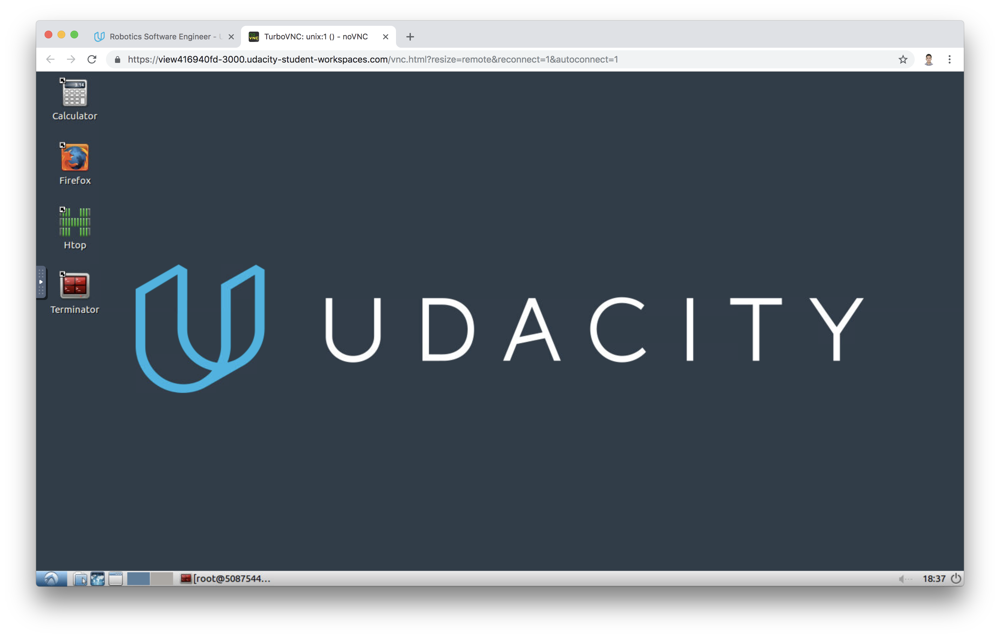
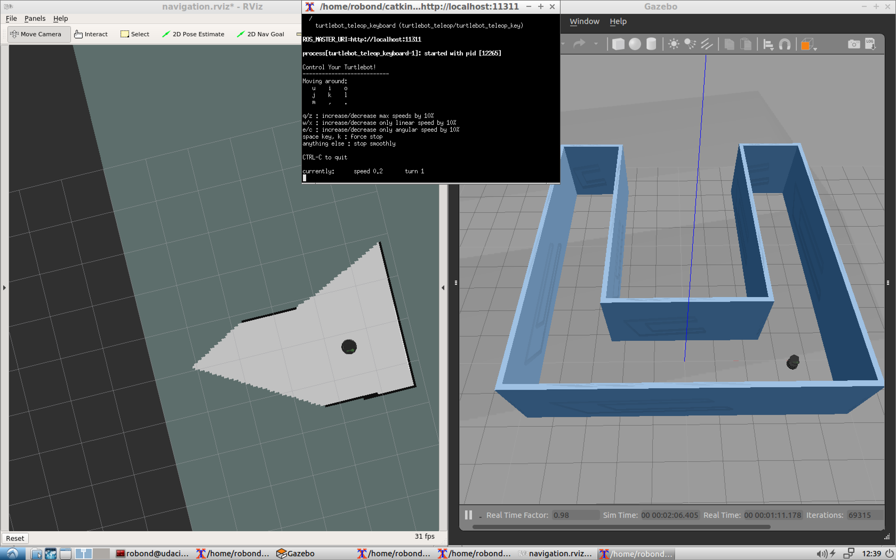

The goal of this project is to program a robot that can autonomosly map an environment and navigate to pick up and drop virtual objects.This project will mainly test your abilities and skills in setting the correct parameters, communicating between different nodes of different packages, coding nodes with C++, publishing and subscribing to different topics, writing launch files, and many others.
The home service robot project is composed of multiple steps:
In this project, Udacity provides you a in Classroom Workspace with ROS set up for you in the Project Workspace concept. If you are not familiar with the Workspace, please review the Workspace Introduction lessons!

After you enter the Workspace Desktop, please upgrade the system using the command
sudo apt-get update && apt-get upgrade
A shell script is a file containing a series of commands and could be executed. It is commonly used to set up environment, run a program, etc.
You already know how to build a roslaunch file. It is very convenient to launch multiple ROS nodes and set parameters from a single roslaunch command. However, when developing robotic software with different packages, it might get harder to track errors and bugs generated from different nodes.
That's when shell scripts come in handy! After you create a shell script file to launch one or many nodes each in separate terminals, you will have the power to track the output of different nodes and keep the convenience of running a single command to launch all nodes.
launch.sh ScriptLet us start by creating this launch.sh script in the Udacity Workspace. Its goal is to launch Gazebo and Rviz in separate instances of terminals. Note that we are using xterm terminal in the script here.
#!/bin/sh xterm -e " gazebo " & sleep 5 xterm -e " source /opt/ros/kinetic/setup.bash; roscore" & sleep 5 xterm -e " rosrun rviz rviz"
The launch.sh shell script launches three terminals and issues one or multiple commands in each terminal. Let’s break down this script to understand the meaning of each line.
#!/bin/sh
This statement is called a shebang. It must be included in every shell script you write since it specifies the full path of the UNIX interpreter to execute it.
xterm -e " gazebo " &
With the xterm -e statement, we launch a new instance of an xterminal. Inside this terminal, we launch gazebo using the command "gazebo". Then we add an ampersand & to indicate that another instance of an xterm terminal will be created in a separate statement.
sleep 5
We pause this script for 5 seconds using sleep.
xterm -e " source /opt/ros/kinetic/setup.bash; roscore" &
We launch a second instance of the xterm terminal. Inside this terminal, we source the ROS workspace and launch the ROS master node.
sleep 5
We pause this script for another 5 seconds.
xterm -e " rosrun rviz rviz"
We are launching a third instance of the xterm terminal, and running rviz.
Save your script file and give it execute pemission by chmod +x launch.sh. Then launch the shell script with ./launch.sh.
After launching this script, we’ll have three open xterm terminals, and we will be able to track any errors or bugs that occur. To recap, this script will open the first terminal and launch gazebo. Then it will pause for 5 seconds and open a second terminal to launch the ROS master. It will pause for another 5 seconds and, finally, open a third terminal to launch RVIZ.
Try to launch your script in the Workspace and verify its functions!
To program your home service robot, you will need to interface it with different ROS packages. Some of these packages are official ROS packages which offer great tools and others are packages that you’ll create. The goal of this section is to prepare and build your catkin workspace.
Here’s the list of the official ROS packages that you will need to grab, and other packages and directories that you’ll need to create at a later stage as you go through the project. Your catkin_ws/src directory should look as follows:
Import these packages now and install them in the src directory of your catkin workspace. Be sure to clone the full GitHub directory and not just the package itself.
You’ll install these packages and create the directories as you go through the project.
Your package should look like this now:
├── # Official ROS packages
|
├── slam_gmapping # gmapping_demo.launch file
│ ├── gmapping
│ ├── ...
├── turtlebot # keyboard_teleop.launch file
│ ├── turtlebot_teleop
│ ├── ...
├── turtlebot_interactions # view_navigation.launch file
│ ├── turtlebot_rviz_launchers
│ ├── ...
├── turtlebot_simulator # turtlebot_world.launch file
│ ├── turtlebot_gazebo
│ ├── ...
├── # Your packages and direcotries
|
├── map # map files
│ ├── ...
├── scripts # shell scripts files
│ ├── ...
├──rvizConfig # rviz configuration files
│ ├── ...
├──pick_objects # pick_objects C++ node
│ ├── src/pick_objects.cpp
│ ├── ...
├──add_markers # add_marker C++ node
│ ├── src/add_markers.cpp
│ ├── ...
└──
The next task of this project is to autonomously map the environment you designed earlier with the Building Editor in Gazebo. But before you tackle autonomous mapping, it’s important to test if you are able to manually perform SLAM by teleoperating your robot. The goal of this step is to manually test SLAM.
Write a shell script test_slam.sh that will deploy a turtlebot inside your environment, control it with keyboard commands, interface it with a SLAM package, and visualize the map in rviz. We will be using turtlebot for this project but feel free to use your personalized robot to make your project stand out!
Launch your test_slam.sh file, search for the xterminal running the keyboard_teleopnode, and start controlling your robot. You are not required to fully map your environment but just make sure everything is working fine. You might notice that the map is low quality, but don’t worry about that for now. If everything seems to be working fine, move on to the next concept!

The next task of this project is to pick two different goals and test your robot's ability to reach them and orient itself with respect to them. We will refer to these goals as the pickup and drop off zones. This section is only for testing purposes to make sure our robot is able to reach these positions before autonomously commanding it to travel towards them.
We will be using the ROS Navigation stack, which is based on the Dijkstra's, a variant of the Uniform Cost Search algorithm, to plan our robot trajectory from start to goal position. The ROS navigation stack permits your robot to avoid any obstacle on its path by re-planning a new trajectory once your robot encounters them. You are familiar with this navigation stack from the localization project where you interfaced with it and sent a specific goal for your robot to reach while localizing itself with AMCL. If you are planning to modify the ROS navigation algorithm or you are curious to know how it's done, take a look at this official tutorial which teaches you how to write a global path planner as a plugin in ROS.
See this video to learn how to manually command the robot.
Once you launch all the nodes, you will initially see the particles around your robot, which means that AMCL recognizes the initial robot pose. Now, manually point out to two different goals, one at a time, and direct your robot to reach them and orient itself with respect to them.
Earlier, you tested your robot capabilities in reaching multiple goals by manually commanding it to travel with the 2D NAV Goal arrow in rviz. Now, you will write a node that will communicate with the ROS navigation stack and autonomously send successive goals for your robot to reach. As mentioned earlier, the ROS navigation stack creates a path for your robot based on Dijkstra's algorithm, a variant of the Uniform Cost Search algorithm, while avoiding obstacles on its path.
There is an official ROS tutorial that teaches you how to send a single goal position and orientation to the navigation stack. You are already familiar with this code from the Localization project where you used it to send your robot to a pre-defined goal. Check out the tutorial and go through its documentation.
Here’s the C++ code of this node which sends a single goal for the robot to reach. I included some extra comments to help you understand it:
#include <ros/ros.h> #include <move_base_msgs/MoveBaseAction.h> #include <actionlib/client/simple_action_client.h> // Define a client for to send goal requests to the move_base server through a SimpleActionClient typedef actionlib::SimpleActionClient<move_base_msgs::MoveBaseAction> MoveBaseClient; int main(int argc, char** argv){ // Initialize the simple_navigation_goals node ros::init(argc, argv, "simple_navigation_goals"); //tell the action client that we want to spin a thread by default MoveBaseClient ac("move_base", true); // Wait 5 sec for move_base action server to come up while(!ac.waitForServer(ros::Duration(5.0))){ ROS_INFO("Waiting for the move_base action server to come up"); } move_base_msgs::MoveBaseGoal goal; // set up the frame parameters goal.target_pose.header.frame_id = "base_link"; goal.target_pose.header.stamp = ros::Time::now(); // Define a position and orientation for the robot to reach goal.target_pose.pose.position.x = 1.0; goal.target_pose.pose.orientation.w = 1.0; // Send the goal position and orientation for the robot to reach ROS_INFO("Sending goal"); ac.sendGoal(goal); // Wait an infinite time for the results ac.waitForResult(); // Check if the robot reached its goal if(ac.getState() == actionlib::SimpleClientGoalState::SUCCEEDED) ROS_INFO("Hooray, the base moved 1 meter forward"); else ROS_INFO("The base failed to move forward 1 meter for some reason"); return 0; }
Watch the video.
You will need to modify this code and edit its node name to pick_objects. Then, edit the frame_id to map, since your fixed frame is the map and not base_link. After that, you will need to modify the code and include an extra goal position and orientation for your robot to reach.
The first goal should be your desired pickup goal and the second goal should be your desired drop off goal. The robot has to travel to the desired pickup zone, display a message that it reached its destination, wait 5 seconds, travel to the desired drop off zone, and display a message that it reached the drop off zone.
The final task of this project is to model a virtual object with markers in rviz. The virtual object is the one being picked and delivered by the robot, thus it should first appear in its pickup zone, and then in its drop off zone once the robot reaches it.
First, let’s see how markers can be drawn in rviz. Luckily, there’s an official ROS tutorial that teaches you how to do it. The tutorial is an excellent reference and includes a C++ node capable of drawing basic shapes like arrows, cubes, cylinders, and spheres in rviz. You will learn how to define a marker, scale it, define its position and orientation, and finally publish it to rviz. The node included in the tutorial will publish a different shape each second at the same position and orientation. Check out the tutorial and go through the documentation to get started.
You will need to first run this node and visualize the markers in rviz. Then you’ll need to modify the code and publish a single shape example: a cube. Your code should follow this algorithm:
Later you will be able to combine this node with the pick_objects node coded earlier to simulate the full home service robot.
Watch the video.
Now it’s time to simulate a full home service robot capable of navigating to pick up and deliver virtual objects. To do so, the add_markers and pick_objects node should be communicating. Or, more precisely, the add_markers node should subscribe to your odometry to keep track of your robot pose.
Modify the add_markers node as follows:
There are many ways to solve this problem. To establish communications between the robot and the markers, one method already mentioned is to let your add_markers node subscribe to your robot odometry and keep track of your robot pose.
Other solutions to this problem might be to use ROS parameters, subscribe to the AMCL pose, or even to publish a new variable that indicates whether or not your robot is at the pickup or drop off zone. Feel free to solve this problem in any way you wish.
Watch the video.
Once you have completed your project, use the Project Rubric to review the project. If you have covered all of the points in the rubric, then you are ready to submit! If you see room for improvement in any category in which you do not meet specifications, keep working!